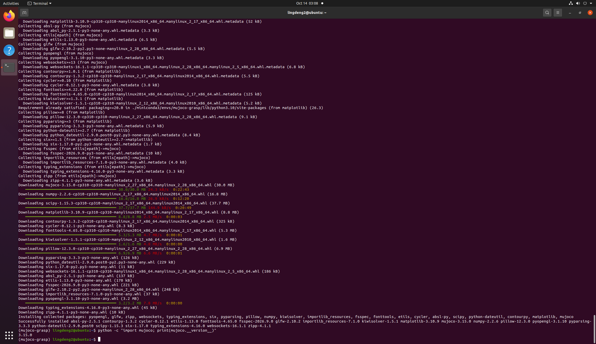

人形机器人基础
前言
本章介绍了怎么配置并使用Mujoco作为机器人的仿真环境。
配置Miniconda和MuJoCo物理仿真环境教程
以下教程在已有ROS Noetic的Ubuntu20.04虚拟机中进行，隔离配置一个基于Conda的MuJoCo仿真环境。
为了避免MuJoCo和ROS出现Python依赖冲突，且因为虚拟机硬盘和内存有限，所以选择更加轻量的Miniconda配置虚拟环境。
一、安装 Miniconda
1、下载安装脚本
打开终端，建议先回到主目录，然后下载安装脚本：
cd ~
wget https://mirrors.tuna.tsinghua.edu.cn/anaconda/miniconda/Miniconda3-latest-Linux-x86_64.sh
2、运行安装脚本
输入下面的代码安装
bash Miniconda3-latest-Linux-x86_64.sh
出现以下提示证明已经在许可协议页面了，持续按空格翻页
Welcome to Miniconda3
In order to continue the installation process, please review the license agreement.
Please, press ENTER to continue
接下来只要继续输入yes或回车同意就行了。
接下来是最关键的一步，如果你的电脑已经安装过其他版本的Mujoco或ros，在下面的选项一定要填no
Do you wish the installer to initialize Miniconda3
by running conda init? [yes|no]
最后输入以下代码激活conda环境
source ~/miniconda3/bin/activate
输入下面的代码确认是否安装成功
conda --version
出现版本号就证明安装成功了。
二、安装 Mujoco
1、接受服务条款
打开bash终端，输入代码激活conda环境
source ~/miniconda3/bin/activate
随后依次输入下面的代码进行授权
conda tos accept --override-channels --channel https://repo.anaconda.com/pkgs/main
conda tos accept --override-channels --channel https://repo.anaconda.com/pkgs/r
2、创建mujoco环境
输入下面的代码创建mujoco环境
conda create -n mujoco-grasp python=3.10 -y
创建完成之后激活环境
conda activate mujoco-grasp
看到命令行前缀从(base)变成(mujoco-grasp)，就可以了。
确认环境可以正常激活之后输入下面的代码退出conda环境
conda deactivate
3、安装系统图形库
输入下面的代码安装系统图形库
sudo apt update
sudo apt install -y libglfw3 libglew-dev libgl1-mesa-glx libosmesa6-dev patchelf
4、在 conda 环境里安装 MuJoCo
进入(mujoco-grasp) 环境
conda activate mujoco-grasp
安装Mujoco和其他所需库
pip install mujoco numpy scipy matplotlib
最后输入下面的代码验证是否安装成功
python -c "import mujoco; print(mujoco.__version__)"
出现版本号就可以了
最后每次要打开Mujoco就需要输入下面的代码进入环境
source ~/miniconda3/bin/activate
conda activate mujoco-grasp
